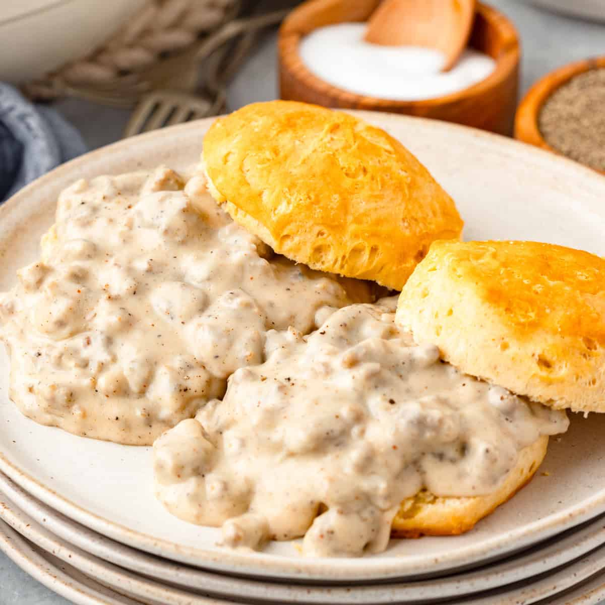
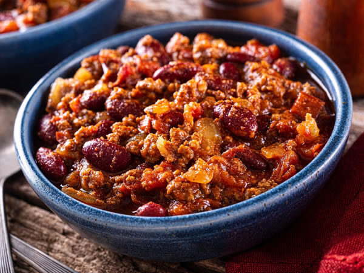
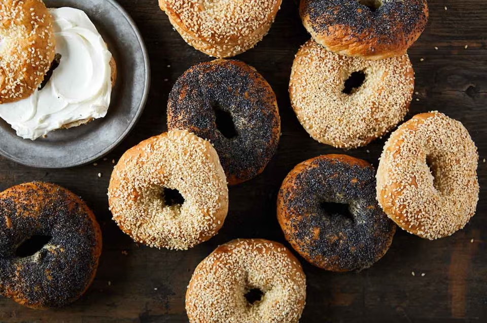

Biscuits and Gravy
 The South
Ingredients:
- Sausage, Flour, Milk, Biscuits.
Method: Brown sausage, whisk in flour and milk until thick.
Lobster Roll
 New England
New England
Ingredients:
- Lobster, Mayo, Lemon, Buns.
Method: Toss lobster with mayo, toast buns, and serve.
Chili Con Carne
 Southwest
Ingredients:
- Beef, Chili powder, Tomatoes.
Method: Sear beef, add spices and liquid, simmer for 2 hours.
Tater Tot Hotdish
 Mid-West
Mid-West
Ingredients:
- Beef, Veggies, Cream soup, Tots.
Method: Layer beef, veg, and soup. Top with tots and bake.
Poutine
 Quebec
Quebec
Ingredients:
- Russet potatoes, Beef gravy, Fresh cheese curds.
Method: Fry potatoes until crispy. Toss with room-temp cheese curds and smother in boiling hot gravy.
Maple Syrup Salmon
 National
National
Ingredients:
- Salmon fillets, Pure maple syrup, Soy sauce, Garlic.
Method: Whisk syrup, soy, and garlic. Marinate salmon, then bake at 400°F until flaky and glazed.
Butter Tarts
 Ontario
Ontario
Ingredients:
- Pastry shells, Brown sugar, Butter, Egg, Corn syrup.
Method: Mix filling ingredients until creamy. Pour into shells and bake until the pastry is golden and filling is bubbly.
Montreal Bagels
 Montreal
Ingredients:
- Flour, Malt, Egg, Honey (for boiling water), Sesame seeds.
Method: Boil dough rings in honey-water before baking in a wood-fired oven for a sweet, crunchy crust.
Three Sisters Stew
 Traditional
Traditional
Ingredients:
- Corn (maize), beans, and squash.
Method: Simmer the "three sisters" together in a vegetable broth with herbs until the squash is tender and the beans are soft.
Bannock
 Traditional
Traditional
Ingredients:
- Flour, baking powder, salt, and water (or milk).
Method: Mix into a dough and fry in a skillet or bake until golden brown.
Wild Game & Fish
 Traditional
Traditional
Ingredients:
- Bison steaks, venison, or wild-caught salmon.
Method: Traditionally smoked or seared over an open flame.
Classic Apple Pie
 Iconic
Iconic
Ingredients:
- Tart apples, cinnamon, sugar, flaky butter crust.
Method: Slice apples and toss with spices. Fill a pastry shell, top with a lattice crust, and bake.